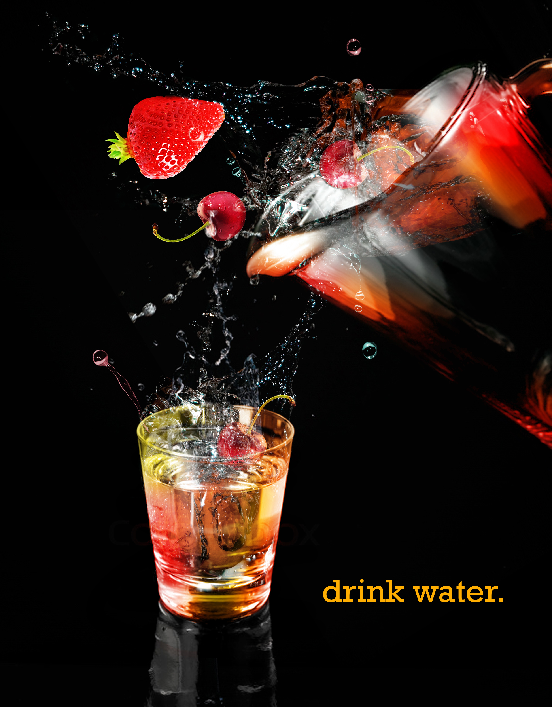
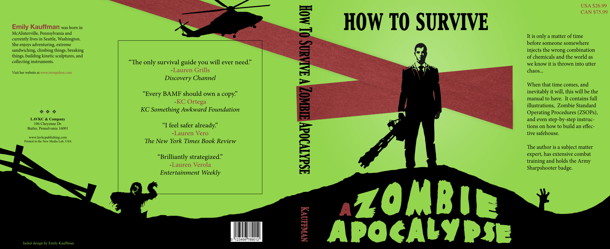
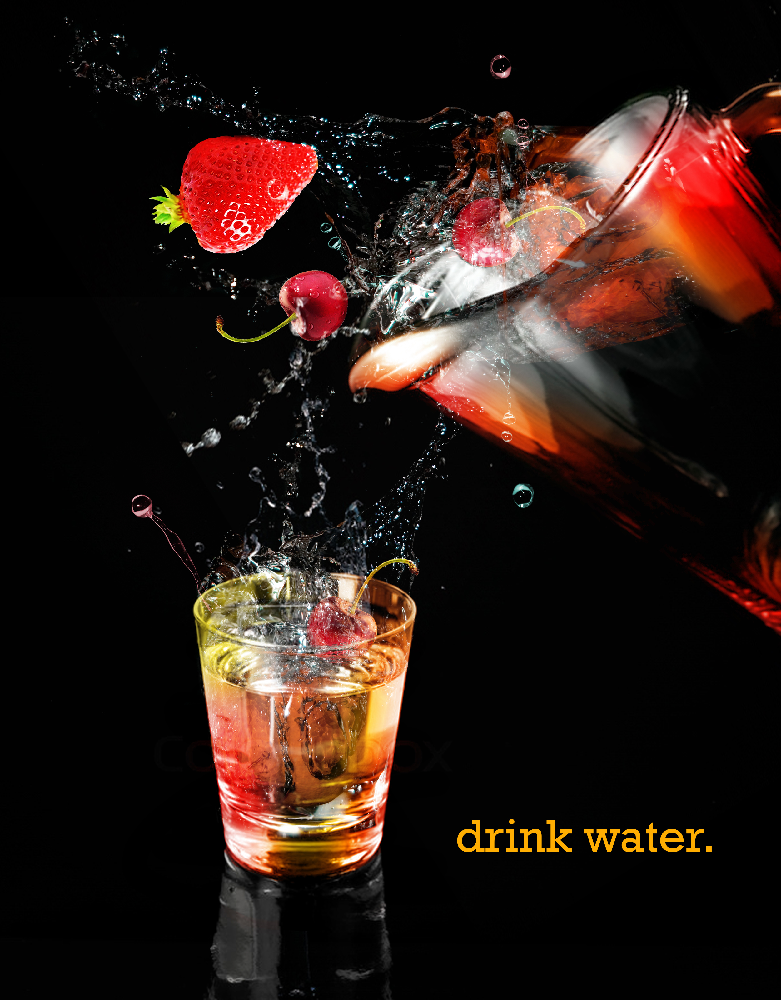
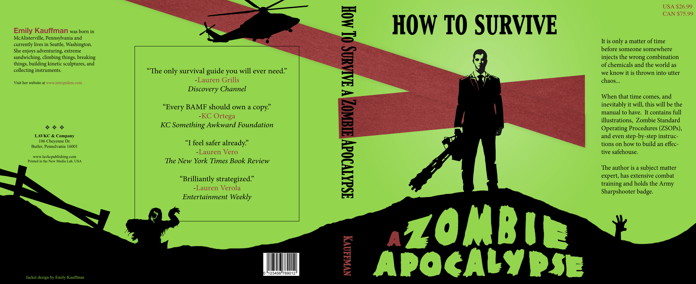

This is a compilation of graphical artworks completed over the last five years.
Project type: Graphic design, art
Technologies used: Adobe Photoshop CS6
 



The following five belong to a series of postmodern images for a graphic design course at W&J College.